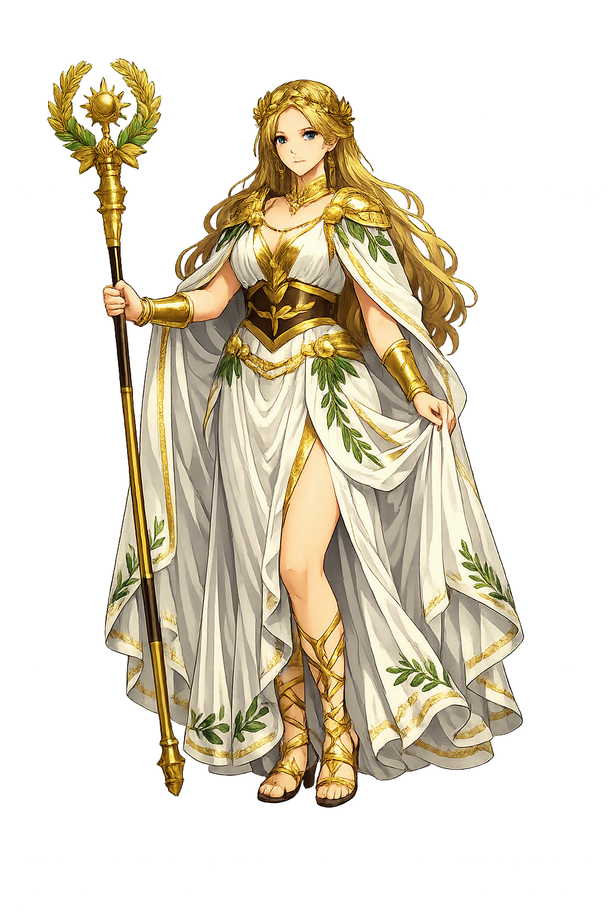

The Authentic Orthography
Excellence, Virtue · The highest fulfillment of aretē

Unicode restoration and ASCII comparison
Ἀρετή
The name in its original Greek form. Arete (Ἀρετή) is attested in the source tradition — “Excellence, virtue”. Its long vowels and acute accents carry the full phonetic and orthographic weight of the source tradition.
arete
The plain arete form is identical to the Unicode restoration. Because this name is already written in Latin letters, no diacritics, stress, or script information were lost — only capitalization differs.
Arete
The Unicode restoration does not need to recover lost marks for Arete. Its value is canonical spelling and consistent cataloguing, not the reconstruction of erased orthography. The domain is readable as-is to both DNS and humanity.
Arete.com → arete.com
The non-ASCII characters in Arete are encoded while the ASCII remains visible. To the DNS, it is Punycode. To humanity, it is Arete.
How Arete is preserved in writing
A bespoke provenance study for Arete is being prepared by the PUNICODEX scholarly team.
Contribute scholarly provenance →Owned, ideal, and ASCII forms of Arete
Arete
Restores Ἀρετή. The full Unicode restoration. arete.com is not in the PuniCodex collection — it is watched for release; if it drops, this temple upgrades to an owned flagship.
Aretḗ
Restores Ἀρετή. Stacked macron+acute on the stressed long vowel, matching Greek Ἀρετή; philologically ideal but often untypeable on phones.. Not in the PuniCodex collection.
How Arete was spoken
The Fulfillment of Human Capacity
Arete is the Greek personification and concept of excellence, virtue, and the fulfilment of a thing's proper function. For a knife, arete is sharpness; for a horse, speed; for a human being, the full development of mind, body, and character. The word carries no single English equivalent: it means virtue, but also skill, courage, moral goodness, and simply being the best version of what one is.
The quality of performing one's function to the highest degree.
Moral and civic goodness, the habit of choosing rightly.
The arete most praised by Homer: the willingness to face danger for a worthy end.
For Plato and Aristotle, the highest arete is intellectual virtue.
Stories of Arete
Arete is more concept than character, but Greek mythology dramatised her in one famous scene: Prodicus' allegory of Heracles at the crossroads. There the young hero must choose between two women, one representing Arete and the other Kakia (Vice). The choice shaped every later Western telling of the hero's education.
In the sophist Prodicus' tale, preserved by Xenophon, the young Heracles meets two women. One is beautiful, modest, and dressed in white: Arete. The other is alluring, overdressed, and easy: Kakia (Vice). Arete promises Heracles a life of toil, honour, and lasting fame; Kakia promises pleasure without effort. Heracles chooses Arete, and so becomes the greatest of Greek heroes.
In the *Odyssey*, Arete is also the name of the queen of the Phaeacians, wife of Alcinous. She is wise, honoured, and consulted by her people. Her name is not an accident: it signals that she embodies the queenly excellence of hospitality, judgement, and persuasion. Odysseus supplicates her directly, knowing that her arete can secure his passage home.
Aristotle made arete central to his ethics. For him, virtue is not mere goodness but excellence in functioning: the arete of the eye is sight, the arete of the horse is speed, and the arete of the human being is rational activity in accordance with virtue. The goal of life is eudaimonia, often translated as happiness but better understood as flourishing through arete.
For the Stoics, arete was the only true good. Health, wealth, and reputation were indifferent; only wisdom, justice, courage, and self-control counted. The sage who possessed arete was free regardless of external circumstances, because excellence of character cannot be taken away by fortune.
Arete asks us what we are for. The question sounds strange to modern ears, because we tend to think of human beings as self-creating rather than as having a function. But the Greek concept is more flexible than it first appears: arete is not a single recipe but the question of how this person, in this situation, can act excellently.
Enter Extended Lore